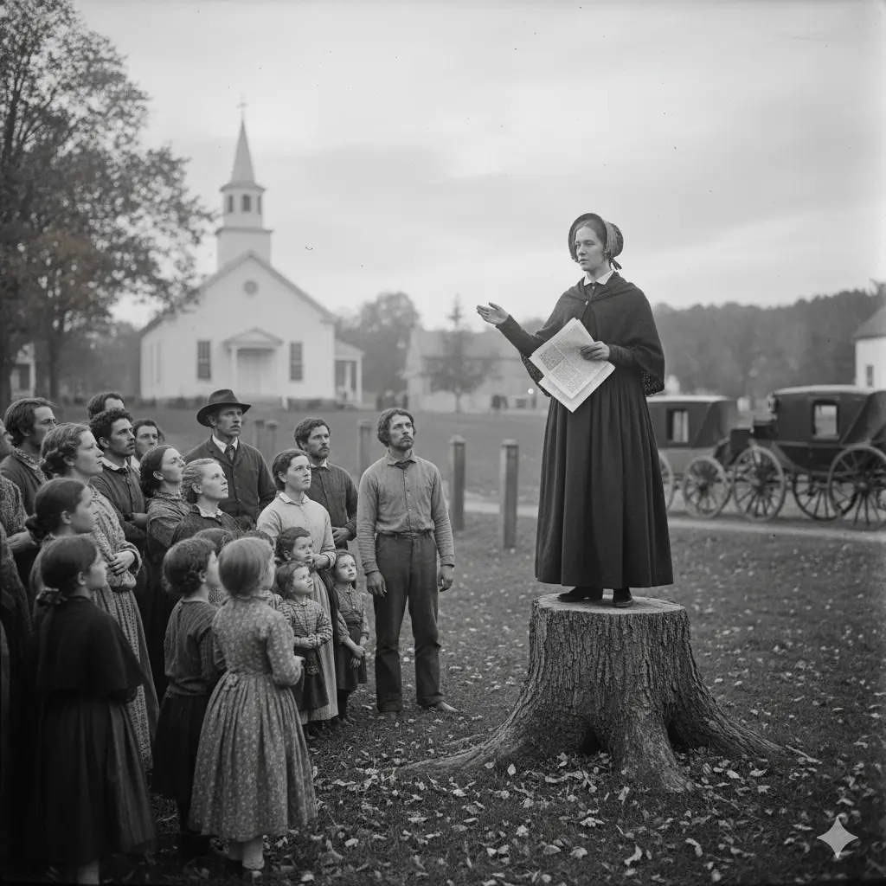
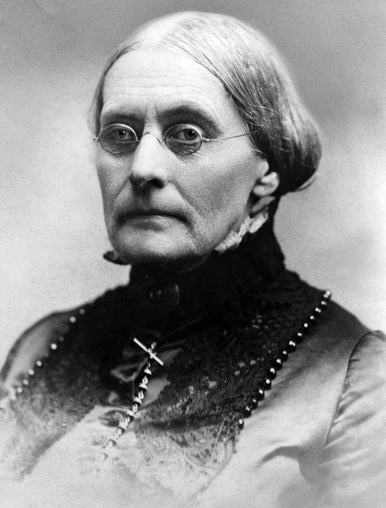
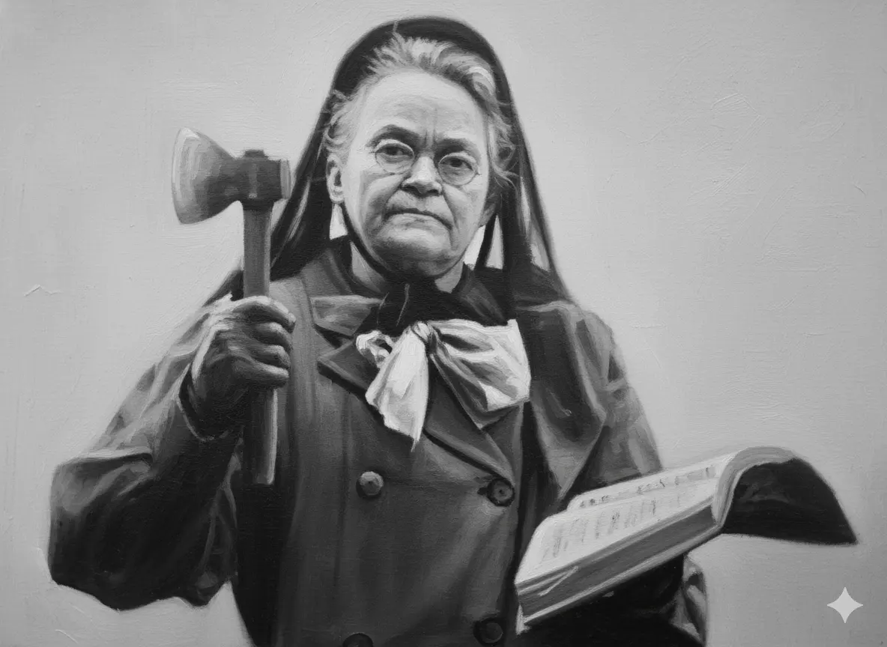

HIST 101 · Chapter 12 · Lecture 3
The Temperance Movement and
the Origins of Prohibition
Moral Reform, Women's Activism, and the Politics of Alcohol in Antebellum America
Lecture 12.3 • HIST 101: American History to 1865
Record Alcohol Consumption in 1830s America
- Whiskey often cheaper than coffee or tea in many communities
- Common at work sites and family tables
- Workers expected daily rations of alcohol on the job
- Drinking integrated into daily social life
Reformers' Fears
Central Question: Could a free people also govern their passions?
Reformers feared moral collapse threatened the viability of republican self-government
Thesis: Temperance evolved from moral persuasion to organized political reform, testing the moral foundations of democracy and offering women a powerful—if unofficial—public voice
Early Movement and Moral Foundations
Religious Roots
The Second Great Awakening and Evangelical Perfectionism
- Emphasis on perfectionism—humans could achieve moral perfection
- Personal salvation linked to social reform
- Moral choice as path to individual and collective redemption
American Temperance Society (1826)
Preached voluntary abstinence and self-control as religious duty
Spread rapidly through churches and community organizations
Pamphlets, newspapers, and testimonials spread the message
Temperance as Civic Virtue
Civil Virtue Frame
Reformers linked sobriety to republican self-government
Moral discipline as civic duty—only a temperate people could sustain democracy
Women's Early Involvement
Acting Within "Separate Spheres"
- Women claimed moral authority to protect the home
- Temperance as extension of domestic duty
- Guardians of family welfare and virtue
Legal and Economic Vulnerability
- Coverture: Married women had no legal identity
- No control over wages or property
- Legally and economically dependent on husbands
- Vulnerable to addiction and violence
Women's moral authority in the domestic sphere became justification for public activism
Why Women Led the Temperance Charge

Drunkenness threatened household survival.
Alcohol consumption linked to increased violence at home.
Women as guardians of virtue justified public engagement.
Female Temperance Societies
Emerged by the 1830s
- Women's auxiliaries to male temperance organizations
- Organizing pledges and signing campaigns
- Distribution of temperance literature
- Fundraising for the cause
- Visiting homes to persuade families
Temperance became women's entry into the moral public sphere
The Washingtonians and the
Democratization of Reform
Origins (1840, Baltimore)
Working-class reformed drinkers created new approach to temperance
- Emphasized personal storytelling and confession
- Public testimonials about struggles with alcohol
- Mutual aid and support networks
- Community rather than condemnation
Inclusive Spirit
Democratic Approach
- Valued experience over status
- Former drinkers as most effective reformers
- No class barriers to participation
Martha Washingtonians
- Women supported meetings and outreach
- Visited families of reformed drinkers
- Provided practical aid and encouragement
Contrast to Elite Reformers
Emotional fellowship over moral lecturing
Reform "from below" rather than imposed from above
Legacy: Introduced modern ideas of recovery, peer support, and moral community—precursor to organizations like Alcoholics Anonymous
From Moral Suasion
to Legal Prohibition
From Persuasion to Law
Disillusionment with Moral Suasion
By the 1840s, reformers grew frustrated with voluntary approach
- Moral persuasion alone seemed insufficient
- Alcohol remained readily available
- Economic interests resisted change
- Reformers demanded law to back morality
The Maine Law (1851)
First statewide prohibition
- Banned manufacture and sale of alcoholic beverages
- Symbol of the moral state enforcing virtue
- Sparked similar legislation in other states
- By 1855, about a dozen states and territories had Maine-style laws
Women Lobbying Legislators
Despite having no vote, women wielded political influence:
- Circulated petitions with thousands of signatures
- Met with lawmakers to advocate for prohibition
- Published appeals in newspapers
- Organized public demonstrations
Cultural Conflict Over Prohibition
Ethnicity
Irish and German immigrants defended alcohol as cultural identity
- Beer and spirits central to ethnic traditions
- Taverns as community gathering spaces
- Prohibition seen as attack on immigrant culture
- Nativist undertones in temperance rhetoric
Class
Temperance coded as middle-class respectability
- Taverns served as working-class social hubs
- Informal "safety valves" where laborers forged solidarity and autonomy
- Reformers' crusade felt like moral policing of working-class life
Region
Southern evangelicals favored personal piety but resisted organized reform
- Suspicious of centralized moral authority
- Emphasis on individual conviction over law
- Less support for prohibition legislation in South
Key Question: Can virtue be legislated—or only chosen?
Temperance, Women's Rights,
and Political Awakening
Temperance as Political Training Ground
Breaking the Boundaries of Silence
Public Voice
Women speaking in mixed audiences broke norms of female silence
- Temperance meetings provided platform for women's voices
- Public speaking challenged "separate spheres" ideology
- Women gained confidence addressing public issues
Organizational Training
Gathering signatures, presenting demands to legislators
Managing finances, organizing events, sustaining organizations
Leadership roles, coordinating campaigns, building networks
These skills cultivated political expertise that women later deployed in suffrage and other reform movements
Leaders in the Movement

Amelia Bloomer
The Lily newspaper
- Combined temperance with women's rights advocacy
- One of the first newspapers edited by and for women
- Championed dress reform (bloomers)
- Connected temperance to broader women's issues

Susan B. Anthony
Entry into activism through temperance
- Started as temperance organizer in 1850s
- Experienced exclusion from male societies
- Realized need for women's suffrage
- Became leading suffragist

Carrie Nation: Temperance Activist
A radical leader in the fight against alcohol in the late 19th and early 20th centuries.
- Born in 1846, she was a member of the Women's Christian Temperance Union.
- Famous for using a hatchet to destroy saloons and bars, starting in Kansas around 1900.
- Her "hatchetations" drew national attention to the prohibition cause.
- Arrested multiple times; her fame raised the issue’s profile, but the Anti-Saloon League and the WCTU did the organizing that won the 18th Amendment.
- Died in 1911, leaving a legacy as a fierce advocate for temperance.
Opposition and Cultural Backlash
Personal Liberty Defense
Critics saw prohibition as moral tyranny
- Violation of individual freedom
- Government overreach into private life
- "Who are they to tell us how to live?"
- Defense of traditional masculine prerogatives
Economic Interests
Powerful industries resisted reform:
- Brewers and distillers: Threatened livelihoods
- Tavern keepers: Loss of business
- Farmers: Grain sales to distilleries
- Organized lobbying against prohibition laws
Immigrant Culture
Beer gardens and taverns as communal spaces of identity
- Centers of ethnic community life
- Sites of cultural celebration and tradition
- Prohibition seen as attack on ethnic identity
Gendered Backlash
Public women mocked as "unfeminine"
- Cartoons depicting temperance women as ugly and aggressive
- Accusations of neglecting domestic duties
- Revealing social boundaries of acceptable female behavior
- Anxiety about changing gender roles
Legacy and Conclusion
Largest Mass Movement of the Era
Temperance became the largest mass movement of the antebellum period
Moral reform fused with civic action, mobilizing hundreds of thousands of Americans
Women's Political Training
Women learned to exert political power through organization, persuasion, and public pressure
Laying groundwork for the Woman's Christian Temperance Union (1874)
Temperance experience convinced many women they needed the vote
Post-Civil War Continuity
Industrialization Reignites the Crusade
Post-Civil War industrialization brought new urgency to temperance reform
- Urban growth and factory culture
- Increased immigration and ethnic tensions
- Concerns about industrial discipline and productivity
- Saloon culture in working-class neighborhoods
Frances Willard's Leadership
Woman's Christian Temperance Union (WCTU)
- Founded 1874, Willard president from 1879
- Linked moral reform with social gospel activism
- Advocated for women's suffrage
- Expanded into labor reform, prison reform
- "Do Everything" policy
Women's Expanded Public Roles
By the Progressive Era, temperance was inseparable from:
- Women's suffrage movement
- Social welfare reforms
- Municipal housekeeping ideology
- Scientific approaches to social problems
Culminated in 18th Amendment (1919) establishing national prohibition
Broader Historical Significance
Balancing liberty, virtue, and social control
Law vs. virtue in a democracy
Moral authority to political influence
Elite reform vs. working-class organizing
Discussion Questions
- How did women turn "moral authority" into civic power?
- Did temperance challenge or reinforce the idea of "separate spheres"?
- What does the temperance crusade reveal about the moral anxieties of democracy?